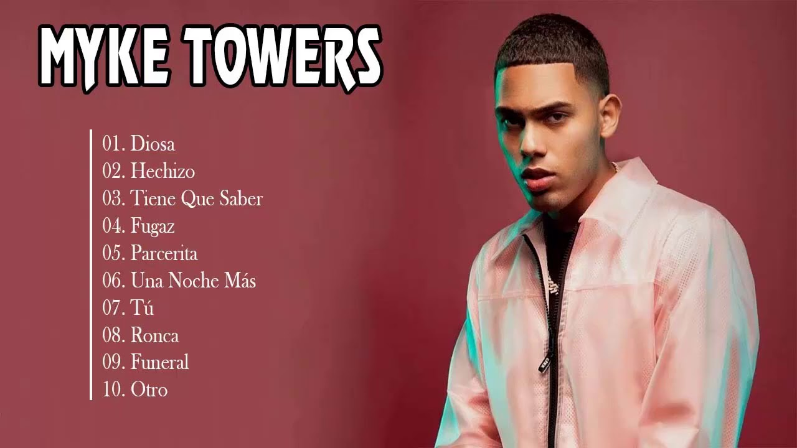

Nuevo Álbum: “LVEU: Vive la tuya... yo vivo la mía” Myke Towers lanzó su más reciente álbum con colaboraciones internacionales y un estilo más maduro. Los fanáticos lo describen como su mejor trabajo hasta la fecha. Leer más
Gira Mundial 2025 El artista anunció su nueva gira por América Latina y Europa, incluyendo México, España y Argentina. ¡Los boletos se agotan rápidamente! Ver fechas
Colaboración con Bad Bunny Myke Towers y Bad Bunny sorprendieron a sus fans con un nuevo tema que rompe récords en Spotify y YouTube. Escuchar ahora
 “Easy Money Baby” (2020) El álbum que consolidó a Myke Towers en la escena internacional con éxitos como “Girl” y “Si se da”. Escuchar en Spotify
“La Vida Es Una” (2023) Un disco introspectivo y con sonidos experimentales que demuestran la madurez artística del cantante. Escuchar en YouTube